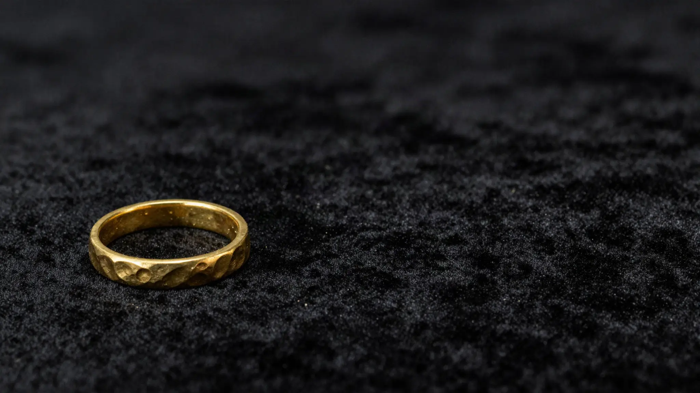
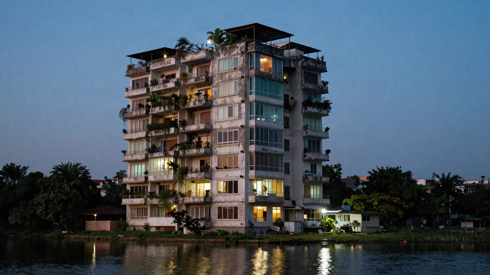

A strategy and design firm.We shape the brand. You keep the AI we build.
We make the work other studios will not dare
Dhaka · London

 ChhayaA phone network, said small.
ChhayaA phone network, said small.

WebsitesA site that answers before they ask. You're reading one now.Our team reads it all and can say no.
BrandingKnown before you speak. ImagesPictures people save. WebsiteIt answers for you. VideosWatched, then visited. ConsultancyWhat you sell, read too.with Akij Dynamics AI systemYou stop repeating yourself.Read first.

You get, in writing, which parts of your business carry you, which you carry, and where to start. Leave it alone is an answer.
Ask for the audit£100 in the UK, no charge in Bangladesh, for the first ten founders in each country, until 31 December 2026.After the first ten in your country, or after 2026, the list price: £500 in the UK, 5,000 taka in Bangladesh.
An AI system you keep.

Every department, one memory.
See insideFor people who want to grow.
Businesses who care, and want more customers to see it.
We won't sell you what already works.
See the workAsif Farid·Sarowar Jahan·Nafia Islam Faria·Muaz Rakin